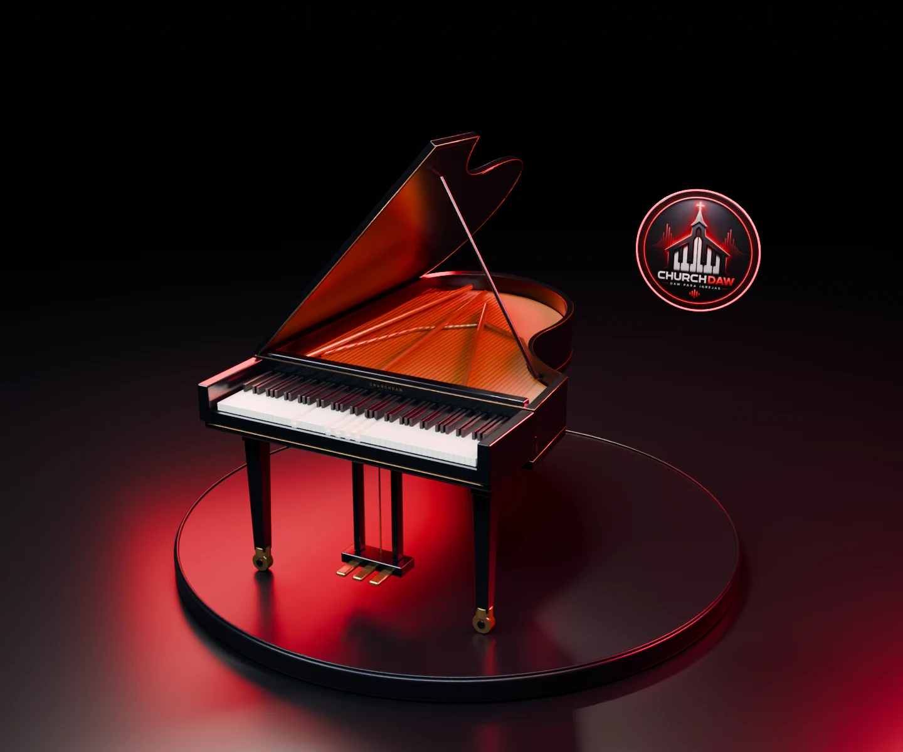
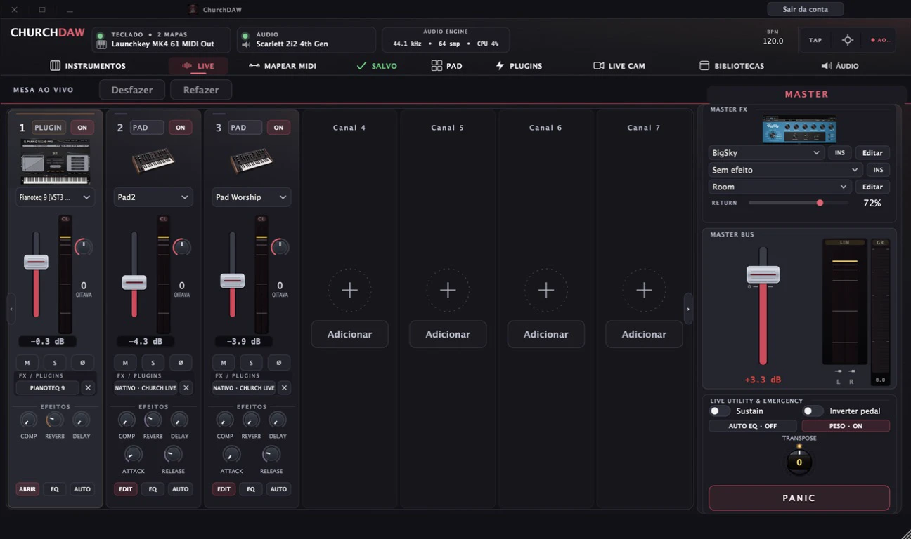

Zero travamentos.
Pipeline de áudio reconstruído em Oboe com baixa latência, proteção contra engasgos de buffer e botão rápido para recuperar interfaces USB-C.
Seu som no palco. Sua música no mundo.
Toque com seus timbres e transforme sua performance em vídeo com o ChurchCam.
Windows · macOS · Android · iPhone e iPad

Reconstruído para o culto ao vivo no celular e no tablet: novo motor de áudio Oboe anti-travamento, consumo enxuto de RAM, interface por toque e ChurchCam integrado.
Toque nas abas abaixo para alternar as telas ou clique sobre o aparelho para ampliar em tela cheia.

Pipeline de áudio reconstruído em Oboe com baixa latência, proteção contra engasgos de buffer e botão rápido para recuperar interfaces USB-C.
Gerenciamento inteligente de amostras e vozes reduz drasticamente o consumo de memória ao empilhar pianos, pads e órgãos no culto.
Faders verticais amplos, respeito automático a recortes de câmera (safe-area) e alternância rápida entre o mixer de palco e o editor por canal.
Conecte controladores sem fio via Bluetooth LE, troque entre 10 Cenas Live sem cortar o som e grave vídeos em MP4 direto pelo celular.
Grave uma performance, explique um acorde ou ensine seu arranjo. Sua imagem, suas notas e o som do ChurchDAW juntos.
Webcam com teclado 3D embaixo ou a tela completa da DAW com seu rosto. Escolha o enquadramento para o seu vídeo.
Teclas, notas, cifras, inversões e sustain acompanham o seu MIDI. Quem assiste consegue acompanhar o que você toca.
Grave com o som da sessão e, se quiser, com sua voz. O microfone tem volume independente. Exporte em MP4, até Full HD.
Mac e Android (versão 1.6.37): prévia e gravação MP4 com áudio da sessão. Windows: prévia visual; gravação ainda indisponível. No iPhone e iPad, a publicação com ChurchCam acompanha o cronograma da App Store.
Uma interface feita para tocar. Explore também as telas reais do ChurchDAW no computador, do primeiro timbre ao último ajuste do master.

BigSky, Pianoteq e Keyscape são plugins de terceiros instalados no computador da demonstração. Não acompanham a licença ChurchDAW.
Monte suas camadas, salve cada momento e leve seus controles físicos para dentro da sessão.
Pianos, órgãos, pads, strings, bells e leads por categoria. Busque, organize favoritos e ouça a prévia dos timbres com amostras locais.
Guarde seus setups para a abertura, o louvor e a ministração. Reúna seus instrumentos e ajustes em cenas para acessar ao vivo.
Ative Mapear MIDI, escolha um controle na tela e mova seu knob, pedal ou fader. Os mapeamentos ficam salvos no projeto.
Pads de samples, filtro, envelope e efeitos. O pad contínuo acompanha o tom da música durante suas transições.
Instrumentos e efeitos VST3 no desktop, além de Audio Unit no Mac. Uma galeria visual para encontrar o plugin certo.
Selecione sua interface, o buffer e as entradas MIDI. O master reúne efeitos e medidores; o botão Panic libera notas presas.
ChurchCam integrado, teclado 3D com acordes ao vivo e uma interface refinada. A versão reúne as melhorias de MIDI, áudio e navegação do ChurchDAW.
Computador, tablet ou celular. Cada versão aproveita o seu equipamento, com recursos disponíveis conforme a plataforma.
Seu controlador, seus plugins e uma sessão pronta para tocar.
Toque, mostre suas notas e grave sua performance com o ChurchCam.
Novo motor Oboe anti-travamento, timbres por toque e ChurchCam no bolso.
Leve seus timbres e sua performance para o ecossistema Apple.
Plugins VST3 e Audio Unit são recursos exclusivos das versões desktop para Windows e macOS.
Escolha o plano ideal. Os dois são pagamento único, sem mensalidade, com licença vinculada à sua conta.
Use em um aparelho por vez e transfira sua vaga quando trocar de equipamento.
Uma vaga para Windows, uma para macOS e uma para Android na mesma conta.
Os planos abaixo atendem Windows, Mac e Android. A versão para iPhone e iPad é adquirida separadamente na App Store.
Os instaladores são baixados diretamente do servidor oficial ChurchDAW. As versões desktop e Android verificam novas atualizações automaticamente.
É a área de vídeo dentro do ChurchDAW. Use a DAW com uma webcam ou câmera frontal, ou coloque seu rosto em destaque com um teclado 3D, notas e acordes acompanhando o MIDI. A marca ChurchDAW aparece no vídeo.
A gravação MP4 com áudio da sessão e microfone opcional está disponível no macOS (1.6.32) e no Android (versão 1.6.37). No Windows, o ChurchCam oferece a prévia visual; a gravação ainda não está disponível.
No Mac e no Android, sim. O ChurchCam captura o áudio da sessão diretamente da DAW. Você pode ativar o microfone e ajustar o volume da voz separadamente para explicar um arranjo ou gravar uma aula.
Não. As capturas desktop mostram plugins instalados no computador da demonstração. Plugins de terceiros exigem suas próprias instalações e licenças. As bibliotecas de timbres nativos são gerenciadas dentro do ChurchDAW.
Não. O ChurchDAW é um aplicativo independente. Você instala, seleciona sua interface e seu teclado MIDI e toca diretamente.
No Windows, instrumentos e efeitos VST3 de 64 bits. No macOS, VST3 e Audio Unit. Plugins VST2 antigos não são suportados.
A versão 1.6.37 deixa os medidores de nível mais leves (menos uso de processador com o app aberto) e inclui correções de estabilidade, além do novo visual Church Live em todas as telas, o ícone oficial do app, a proteção do áudio ao trocar de aplicativo, além do motor de áudio Oboe anti-travamento, consumo reduzido de memória RAM, recuperação rápida de interfaces USB-C, layout touch com faders amplos, MIDI Bluetooth LE e o ChurchCam integrado.
Sim, desde que o Mac Intel rode macOS 10.15 Catalina ou superior. Em Apple Silicon, o mínimo é macOS 11 Big Sur.
Depois da ativação e do download da biblioteca, você pode tocar offline dentro do período seguro da licença. Uma conexão periódica revalida o acesso.
Não. O plano Individual custa R$ 129,99 e o Pacote Completo custa R$ 199,90. Ambos são pagamento único, sem assinatura mensal.
O plano Individual permite um aparelho por vez. O Pacote Completo inclui três vagas simultâneas e separadas: um Windows, um Mac e um Android.
Sim. O modo MIDI Learn permite selecionar o controle na tela e mover o knob, botão, pedal ou fader físico que você deseja usar.
Conheça as novidades e converse com a comunidade ChurchDAW.